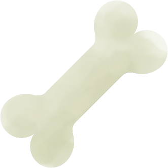

嫩煎雞胸輕食盒
熱量：約 420 大卡蛋白質：約 38g嫩煎雞胸、蒸花椰菜、溏心蛋與糙米飯的經典高蛋白組合，減脂首選
簡單調味的雞胸以少油嫩煎，保留原味與水分，搭配富含纖維的花椰與低 GI 糙米飯，是控制血糖、增加飽足感的完美組合。溏心蛋增添口感與好脂肪，是健身族群的便當首選。
內容物:
嫩煎雞胸 、當季食蔬、溏心蛋、糙米飯
特色亮點： 減脂首選 不含豬肉 不含牛肉
特色亮點： 減脂首選 不含豬肉 不含牛肉